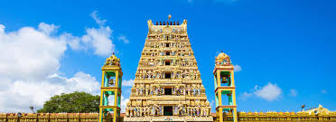
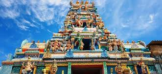
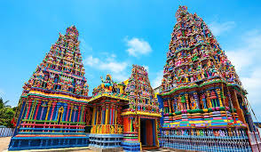

Munneswaram Temple (Chilaw)
 
Munneswaram temple is an important regional Hindu temple complex in Sri Lanka.
It has been in existence at least since 1000 CE although myths surrounding the temple associate it with the popular Indian epic Ramayana, and its legendary hero-king Rama.
The temple is one of the ancient Pancha Ishwarams dedicated to Shiva in the region.
The temple complex is a collection of five temples, including a Buddhist temple.
The central temple dedicated to Shiva (Siva) is the most prestigious and biggest, and is popular amongst Hindus.
The other temples are dedicated to Ganesha, Aiyanar and Kali.
The Kali temple is also popular with Buddhists, who frequent the complex.
Post-19th century, most of the devotees of all temples in the complex belong to the majority Sinhala Buddhist ethnic group;
the temples, excluding the Ayyanayake and the Buddhist temple, are administered by families belonging to the minority Hindu Tamils.
The temple is located in Munneswaram, a village with mixed Sinhala and Tamil population situated in the historic Demala Pattuva ("Tamil division") region in the Puttalam District.
The main Shiva temple owns extensive property in the surrounding villages, ownership of which was affirmed when the region was part of the medieval Kotte Kingdom.
The temple was destroyed twice by the Portuguese colonial officers, who handed over the properties to the Jesuits.
Although the Jesuits built a Catholic chapel over the temple foundation, locals reconstructed the temple both times.
Due to religious and demographic change after the late 18th century, most surrounding villages and towns are not directly associated with the temple administration and maintenance.
However, the villages of Maradankulama and Udappu are associated with organizing the main temple festival.
The main festivals celebrated at the temple include Navarathri and Sivarathri.
The former is a nine-day long festival in honour of the presiding Goddess, while the latter is an overnight observation in honour of Lord Shiva.
In addition to these two Hindu festivals, the temple has a festival of its own, the Munneswaram festival, a four-week-long event attended by Hindus and Buddhists.
Munneswaram temple is situated in Munneswaram village, the center of the spiritual and religious life of the people dwelling in a medieval administrative division called Munneswaram Pattuva ("Munneswaram division").
For most of the temple's existence, Munneswaram Pattuva has had over 60 villages for which Maradankulama provided political leadership.
The Pattuva belonged to an even bigger medieval division called Demala Pattuva ruled by semi-independent Tamil chiefs subject to Sinhalese kingdoms.
The presiding deity is called Sri Munnainathar ("Lord of antiquity" alluding to its ancient roots) and the goddess is called Sri Vativampika Devi ("goddess of beautiful form" another name for Mother goddess Ambal).
 Location (Munneswaram Temple [Chilaw])